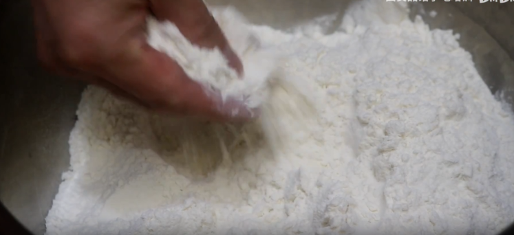
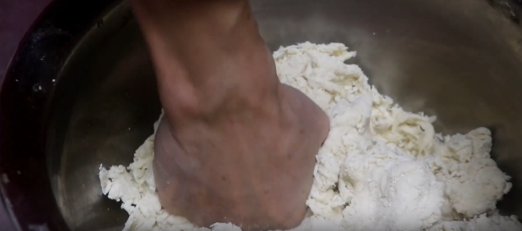
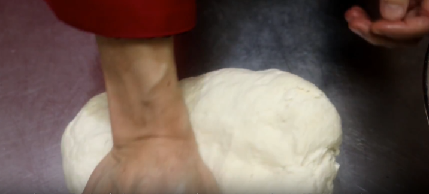
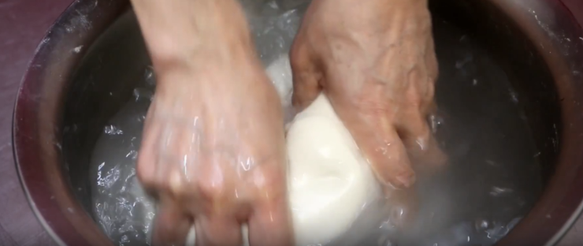
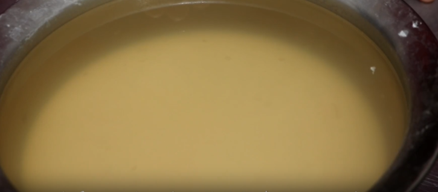
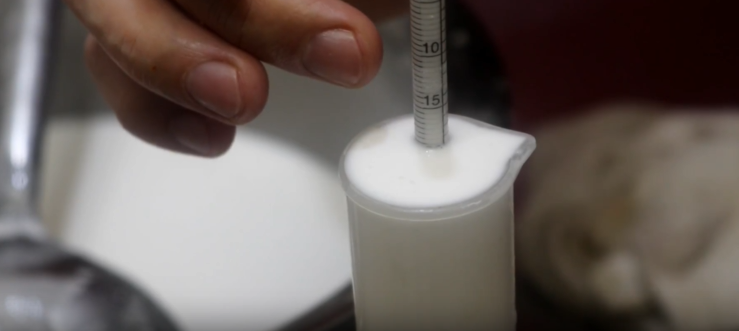
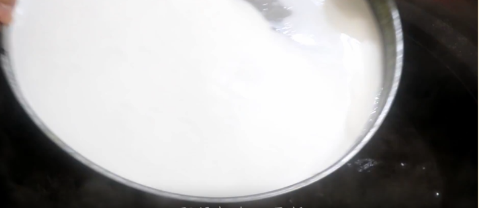
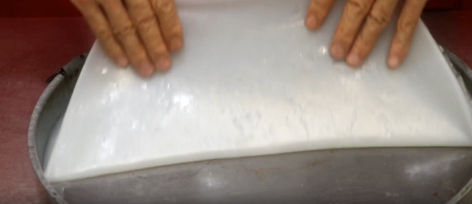
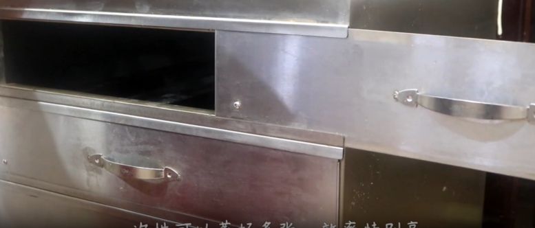
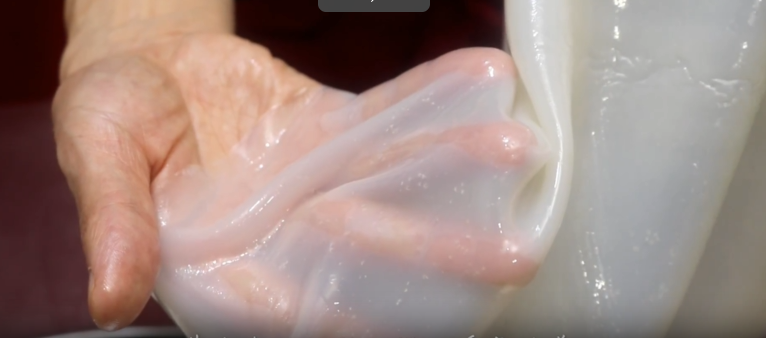

视频教程
凉皮制作过程
一、凉皮简介
- 凉皮是陕西的招牌小吃之一，风靡全国，在每个城市都能看到凉皮的身影。
- 很多人自己在家蒸凉皮时，容易遇到凉皮易烂、不劲道、粘箩等问题。
- 教学目标：教大家蒸出正宗、劲道、透亮的陕西凉皮。
二、面粉的选择（关键第一步）

- 中筋面粉：✅ 推荐，做凉皮最合适
- 低筋面粉：❌ 容易烂
- 高筋面粉：❌ 口感发硬
- 提示：选用做面条的中筋面粉，不能用低筋粉（容易烂），也不能用高筋粉（口感发硬）。
三、和面


- 原料：中筋面粉2斤、凉水460克（分次加入，必须用凉水，不能用热水）
- 分次加水，边加边搅拌
- 挤压成团，做到盆光、手光
- 揉成光滑面团
- 封保鲜膜醒面30分钟（目的是省力、省时间）
- 注意：必须用凉水，不能用热水。用热水的话，后面洗面的时候不容易出浆。
四、洗面（淀粉与面筋分离）


- 醒好的面团放入盆中，加入凉水开始洗浆（把小麦里的淀粉和面筋分离）
- 把面团翻转、揉搓，尽量不让面团散开
- 面浆洗到浓稠时，过滤出面浆
- 继续加水，没过面团，继续揉搓
- 重复以上步骤，直到水清，面浆和面筋充分分离
- 💡 提示：洗出来的面筋可以蒸熟或煮熟吃，就是凉皮里搭配的面筋块。
五、面浆沉淀（关键第二步）

- 洗出来的面浆静置沉淀一晚上
- 沉淀后，面浆上面会沥出一层清水
- 把上面的清水倒掉
- 说明：沉淀后才能达到蒸面皮所需的浓度。
六、面浆浓度判断

- 经验法：沉淀后倒掉清水，剩下的是浓稠面浆
- 测量法：用浓度计测量，达到18个点左右刚刚好
- 💡 提示：如果没有浓度计，可以观察面浆的浓稠度——像酸奶那样能挂住勺子即可。
七、蒸凉皮的两种方法
方法一：传统烫蒸法


- 烧一锅开水，箩里刷油（防粘）
- 加入面浆，摇一摇，让面浆均匀铺满箩底
- 放入开水中，立即提起来再摇，让面浆分布更均匀
- 放入锅中，大火蒸2分钟
- 看到凉皮起泡，说明熟了
- 出锅立刻放入凉水中冰凉，然后起皮子
- 关键要点：火一定要够大；锅盖要有一定重量，才能把蒸汽收住；这样蒸出来的凉皮才不容易烂。
方法二：凉皮专用蒸箱（商用高效）

- 一次可以蒸好多张，效率高
- 可以一次蒸两张
- 同样大火2分钟，出锅后凉水冰凉起皮子
八、成品标准

- 透亮：面皮晶莹透亮
- 劲道：怎么抖都不烂
- 柔软：不硬，口感好
- 💡 演示：用手托住使劲抖，柔软度特别好，而且不会断裂。